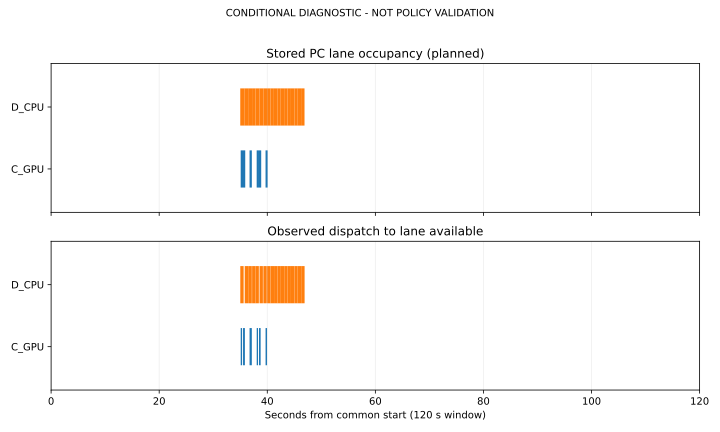
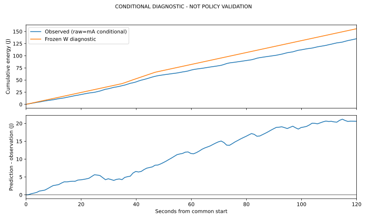
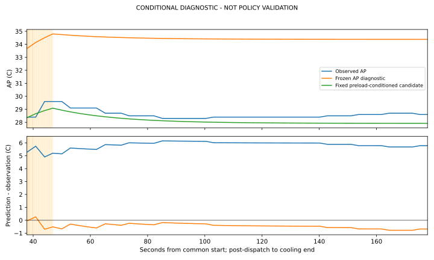
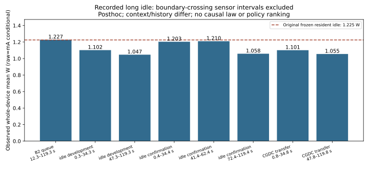

자료 구분: 실측 원자료 · 별도 전이 확인 block
실제 일정 조건부 진단입니다. 온라인 B2·정책 순위·정확도 PASS가 아닙니다. 전류 raw=mA 조건부, 절대 정확도 미인증.
AP는 부하 전 관측으로 유효 유휴 기준을 계산한 고정 절차이며, 부하 후 관측은 점수에만 사용합니다. AP 분모는 첫 dispatch 이후~냉각 끝, J 분모는 공통120초입니다.
| 지표 | 값 |
|---|---|
| initial_ap_c | 28.3 |
| initial_ap_in_development_range | False |
| actual_parallel_seconds | 1.466751766999998 |
| observed_energy_120s_j | 135.14649269445428 |
| predicted_energy_120s_j | 155.73034390167047 |
| signed_energy_error_j | 20.583851207216185 |
| relative_energy_error | 0.15230769808990272 |
| ap_comparison_start_s | 35.008859002 |
| ap_comparison_end_s | 180.062298472 |
| frozen mae_c | 5.831406439748467 |
| frozen max_absolute_error_c | 6.152642762376924 |
| candidate mae_c | 0.46346271860301114 |
| candidate max_absolute_error_c | 0.7776537307619442 |
미지원: strict 전체창 J/AP·AP 최고/한도·정책 판별력. 시작 AP 지원 판정과 짧은 전환 지원은 별개입니다.



ap_paths.csv energy_path.csv phase_energy_residuals.csv actual_states.csv기계 판독·검증 경계 · 공유 파일 SHA inventory
Boundary-crossing sensor intervals excluded. Original frozen idle 1.225433W; post-load observed 1.227498 / 1.046593 / 1.058204 / 1.055108W. Different initial conditions and histories; no fitting or new measurement.

Intervals / energy / mean W | Source hashes / initial conditions